52 itens: 48 no jogo, 4 desligados (linhas vermelhas). Clique no nome pra ir ao item.
| # | | Item | Nasce em | Quantidade / densidade | Colide? | Status |
|---|
| 01 | 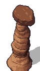 | Hoodoo (monolito)
Formações grandes | Planalto | config: 2–3 por mundo · obs. 3/3/3 | Sim · 1 tile (a pegada). Hoodoo de 1×1. | no jogo |
| 02 |  | Arco de pedra
Formações grandes | Planalto | config: 1–2 por mundo · obs. 1/2/1 | Sim · 2 tiles (os 2 pilares das pontas). O vão de 3 tiles do meio é livre e dá pra passar por baixo. | no jogo |
| 03 |  | Basalto colunar
Formações grandes | Basalto | config: 2–3 por mundo · obs. 3/2/2 | Sim · 6 tiles (3×2). | no jogo |
| 04 | 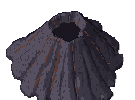 | Cone de escória
Formações grandes | Basalto | config: 1 por mundo · obs. 1/1/1 | Sim · 6 tiles (3×2). | no jogo |
| 05 |  | Crosta de sal elevada
Formações grandes | Salar | config: 0 por mundo (0–0 = não nasce) | Seria sim · 5 tiles (5×1), mas não nasce. | desligado (fora do jogo) |
| 06 |  | Pedra rachada
Formações pequenas | Planalto | config: 4–6 por mundo · obs. 4/5/4 | Sim · 1 tile. | no jogo |
| 07 | 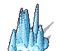 | Agulhas de gelo
Formações pequenas | Faixa gelada | config: 3–5 por mundo · obs. 4/3/3 | Sim · 3 tiles (3×1). | no jogo |
| 08 | 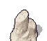 | Pilares de sal
Formações pequenas | Salar | config: 0 por mundo (0–0 = não nasce) | Seria sim · 1 tile, mas não nasce. | desligado (fora do jogo) |
| 09 | 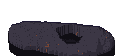 | Tubo de lava colapsado
Formações pequenas | Basalto | config: 0 por mundo (0–0 = não nasce) | Seria sim · 3 tiles (3×1), mas não nasce. | desligado (fora do jogo) |
| 10 |  | Fumarola · cone baixo
Fumarolas | Basalto | 2–3 por mundo (total 5–8: cone 2–3, par 1–2, chaminé 1–2) · obs. 3/3/3 | Sim · 1 tile (1×1). | no jogo |
| 11 |  | Fumarola · par de cones
Fumarolas | Basalto | 1–2 por mundo (total 5–8: cone 2–3, par 1–2, chaminé 1–2) · obs. 1/1/2 | Sim · 2 tiles (2×1). | no jogo |
| 12 |  | Fumarola · chaminé
Fumarolas | Basalto | 1–2 por mundo (total 5–8: cone 2–3, par 1–2, chaminé 1–2) · obs. 2/2/1 | Sim · 1 tile (1×1). | no jogo |
| 13 | | Lascas de basalto (v8)
Decoração solta com altura | Basalto | 3.5% dos tiles de basalto · obs. 299/274/265 (antes de filtrar tile ocupado) | Não colide | no jogo |
| 14 | | Cristais de sal (v8)
Decoração solta com altura | Salar | 3.5% dos tiles de salar · obs. 85/71/91 (antes de filtrar tile ocupado) | Não colide | no jogo |
| 15 | | Pedaços de gelo (v8)
Decoração solta com altura | Faixa gelada | 3.5% dos tiles de faixa gelada · obs. 151/155/139 (antes de filtrar tile ocupado) | Não colide | no jogo |
| 16 | 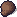 | Seixos (v9)
Decoração solta com altura | Planalto e leito seco | 1.2% dos tiles de planalto + 0.6% dos tiles de leito seco · obs. 215/259/271 (antes de filtrar tile ocupado) | Não colide | no jogo |
| 17 | | Matacão (v9)
Decoração solta com altura | Planalto | 0.6% dos tiles de planalto · obs. 132/151/126 (antes de filtrar tile ocupado) | Não colide | no jogo |
| 18 | 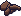 | Lajes (v9)
Decoração solta com altura | Planalto | 0.8% dos tiles de planalto · obs. 150/160/177 (antes de filtrar tile ocupado) | Não colide | no jogo |
| 19 |  | Lama enrolada (v9)
Decoração solta com altura | Leito seco | 2% dos tiles de leito seco · obs. 5/8/5 (antes de filtrar tile ocupado) | Não colide | no jogo |
| 20 |  | Montinho de sal (v9)
Decoração solta com altura | Salar | 1% dos tiles de salar · obs. 15/12/18 (antes de filtrar tile ocupado) | Não colide | no jogo |
| 21 |  | Placas de sal (v9)
Decoração solta com altura | Salar | 1.2% dos tiles de salar · obs. 23/31/27 (antes de filtrar tile ocupado) | Não colide | no jogo |
| 22 | 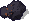 | Bombas vulcânicas (v9)
Decoração solta com altura | Basalto | 1.2% dos tiles de basalto · obs. 103/81/102 (antes de filtrar tile ocupado) | Não colide | no jogo |
| 23 | | Toco de coluna (v9)
Decoração solta com altura | Basalto | 0.8% dos tiles de basalto · obs. 80/59/50 (antes de filtrar tile ocupado) | Não colide | no jogo |
| 24 | | Penitentes (v9)
Decoração solta com altura | Faixa gelada | 1.2% dos tiles de faixa gelada · obs. 60/50/55 (antes de filtrar tile ocupado) | Não colide | no jogo |
| 25 |  | Rocha com geada (v9)
Decoração solta com altura | Faixa gelada | 1% dos tiles de faixa gelada · obs. 45/37/32 (antes de filtrar tile ocupado) | Não colide | no jogo |
| 26 | 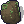 | Musgo do Verde (v9) · sobre matacão e toco
Decoração solta com altura | Planalto (matacão) e Basalto (toco) | Sempre que o matacão ou o toco de mesmo N existe, só no Verde (moss_on: boulder, column_stub) | Não colide | no jogo |
| 27 |  | Mancha escura (v8)
Decalques de chão | Planalto, Salar, Basalto | Planalto 6% das células; Salar 7% das células; Basalto 6% das células · obs. 228/209/206 | Não colide (plano, só pintura) | no jogo |
| 28 | 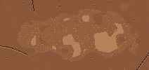 | Mancha clara (v8)
Decalques de chão | Planalto, Salar, Faixa gelada, Leito seco | Planalto 4% das células; Salar 7% das células; Faixa gelada 7% das células; Leito seco 12% das células · obs. 147/152/182 | Não colide (plano, só pintura) | no jogo |
| 29 |  | Rachadura longa (v8)
Decalques de chão | Planalto, Salar, Basalto, Leito seco | Planalto 20% das células; Salar 14% das células; Basalto 18% das células; Leito seco 28% das células · obs. 660/618/675 | Não colide (plano, só pintura) | no jogo |
| 30 |  | Placas (v8)
Decalques de chão | Planalto, Basalto | Planalto 12% das células; Basalto 12% das células · obs. 391/404/378 | Não colide (plano, só pintura) | no jogo |
| 31 |  | Cascalho (v8)
Decalques de chão | Planalto, Faixa gelada | Planalto 16% das células; Faixa gelada 31% das células · obs. 517/544/490 | Não colide (plano, só pintura) | no jogo |
| 32 | 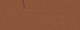 | Sulcos de vento (v8)
Decalques de chão | Planalto, Faixa gelada | Planalto 6% das células; Faixa gelada 13% das células · obs. 199/193/245 | Não colide (plano, só pintura) | no jogo |
| 33 |  | Cristas (v8)
Decalques de chão | Salar | Salar 28% das células · obs. 71/68/75 | Não colide (plano, só pintura) | no jogo |
| 34 |  | Escória (v8)
Decalques de chão | Basalto | Basalto 30% das células · obs. 279/254/251 | Não colide (plano, só pintura) | no jogo |
| 35 |  | Mancha de óxido/ferrugem (v8)
Decalques de chão | Basalto | Basalto 6% das células · obs. 64/59/61 | Não colide (plano, só pintura) | no jogo |
| 36 | 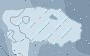 | Placa de gelo (v8)
Decalques de chão | Faixa gelada | Faixa gelada 13% das células · obs. 77/70/67 | Não colide (plano, só pintura) | no jogo |
| 37 |  | Veio no chão (v9)
Decalques de chão | Planalto | Planalto 18% das células · obs. 389/464/424 | Não colide (plano, só pintura) | no jogo |
| 38 | 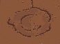 | Óxido (v9)
Decalques de chão | Planalto | Planalto 12% das células · obs. 300/282/292 | Não colide (plano, só pintura) | no jogo |
| 39 |  | Polígonos de sal (v9)
Decalques de chão | Salar | Salar 15% das células · obs. 31/34/48 | Não colide (plano, só pintura) | no jogo |
| 40 | 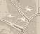 | Eflorescência (v9)
Decalques de chão | Salar | Salar 15% das células · obs. 46/39/40 | Não colide (plano, só pintura) | no jogo |
| 41 |  | Lava encordoada (v9)
Decalques de chão | Basalto | Basalto 30% das células · obs. 255/232/274 | Não colide (plano, só pintura) | no jogo |
| 42 | 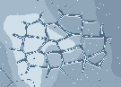 | Polígonos de gelo (v9)
Decalques de chão | Faixa gelada | Faixa gelada 15% das células · obs. 67/64/88 | Não colide (plano, só pintura) | no jogo |
| 43 |  | Geada (v9)
Decalques de chão | Faixa gelada | Faixa gelada 15% das células · obs. 57/78/60 | Não colide (plano, só pintura) | no jogo |
| 44 |  | Rastro (v9)
Decalques de chão | Leito seco | Leito seco 14% das células · obs. 2/4/4 | Não colide (plano, só pintura) | no jogo |
| 45 | 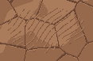 | Ondulações (v9)
Decalques de chão | Leito seco | Leito seco 21% das células · obs. 5/3/4 | Não colide (plano, só pintura) | no jogo |
| 46 | 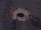 | Respiro de fumarola (v9)
Decalques de chão | Basalto (saiu do sorteio) | 0 · fora do decal_mix do basalto | Não colide (plano, só pintura) | desligado (fora do jogo) |
| 47 | 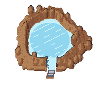 | Cratera de impacto · etapas 0..4 (tampa de gelo)
Peças da paisagem fixas | Planalto (a 15–20 tiles da base) | 1 por mundo (a etapa vai de 0 tampada a 4 vazia, conforme o calor) | Sim · 9 tiles (3×3); o E no tile do meio de baixo desce quando a etapa é 4 | no jogo |
| 48 |  | Manto de ejeção da cratera
Peças da paisagem fixas | Planalto (em volta da cratera) | 1 por mundo, centrado no mesmo ponto da cratera | Não colide (camada de decalque, vai depois do chão) | no jogo |
| 49 |  | Geada do gelo-portão (frost_ring)
Peças da paisagem fixas | Faixa gelada (em volta de cada portão) | 1 por gelo-portão (2–3 portões por mundo); aparece enquanto o gelo derrete | Não colide (plano no chão) | no jogo |
| 50 | 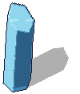 | Bloco de gelo do portão · lasca
Peças da paisagem fixas | Faixa gelada (bolsões da cordilheira norte) | 2–3 portões por mundo, 3–5 blocos cada. Lasca 1 entra nas receitas A; Lasca 2 entra nas receitas A, B | Sim, por retângulo do bloco (caixa por quadro); some ao derreter (melt), não se quebra nem se minera | no jogo |
| 51 | 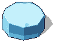 | Bloco de gelo do portão · laje
Peças da paisagem fixas | Faixa gelada (bolsões da cordilheira norte) | 2–3 portões por mundo, 3–5 blocos cada. Laje 1 entra nas receitas B, C; Laje 2 entra nas receitas A, B, C | Sim, por retângulo do bloco (caixa por quadro); some ao derreter (melt), não se quebra nem se minera | no jogo |
| 52 | 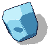 | Bloco de gelo do portão · pedra
Peças da paisagem fixas | Faixa gelada (bolsões da cordilheira norte) | 2–3 portões por mundo, 3–5 blocos cada. Pedra 1 entra nas receitas A, C; Pedra 2 entra nas receitas A, B | Sim, por retângulo do bloco (caixa por quadro); some ao derreter (melt), não se quebra nem se minera | no jogo |